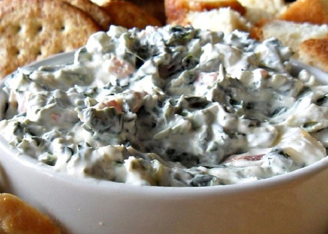

Best Spinach Dip Ever

Description
This is my dad's recipe. The entire family loves it! A flavorful spinach mixture fills a tasty bread bowl. Your family will love it, too.
Ingredients
- 1 cup mayonnaise
- 1 (16 ounce) container sour cream
- 1 (1.8 ounce) package dry leek soup mix
- 1 (4 ounce) can water chestnuts, drained and chopped
- ½ (10 ounce) package frozen chopped spinach, thawed and drained
- 1 (1 pound) loaf round sourdough bread
- 1 pound thinly sliced Swiss cheese
Steps
- In a medium bowl, mix together mayonnaise, sour cream, dry leek soup mix, water chestnuts and chopped spinach. Chill in the refrigerator 6 hours, or overnight.
- Remove top and interior of sourdough bread. Fill with mayonnaise mixture. Tear removed bread chunks into pieces for dipping.